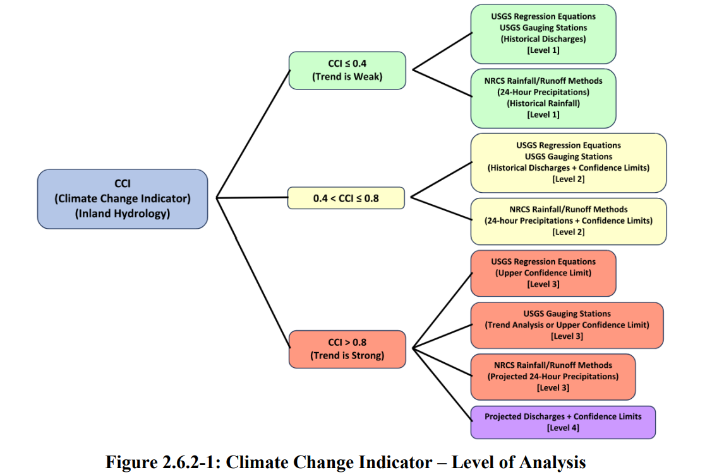
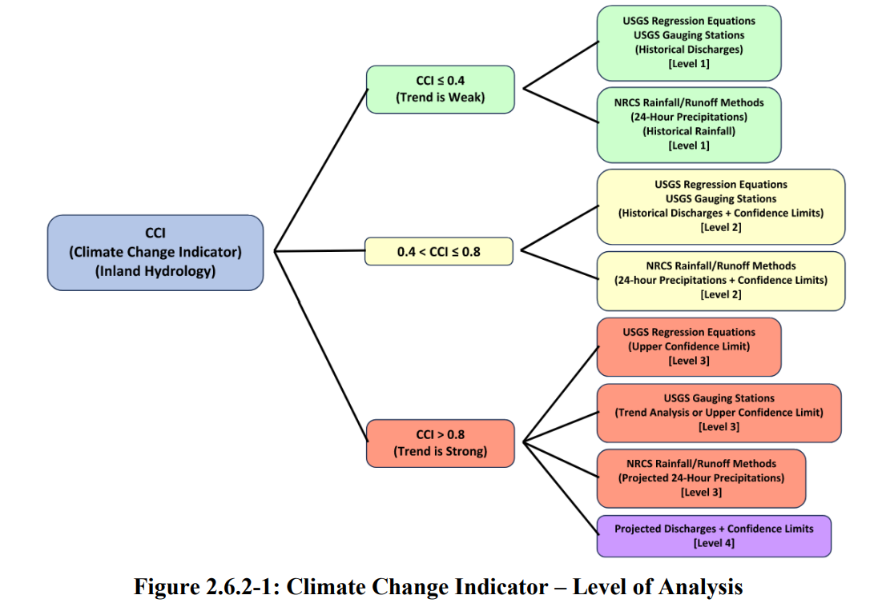

Sanaz Borhani, PhD, PE
Water Resources Engineer specializing in floodplain analysis, bridge hydraulics, and climate resilience—with Python + GIS automation.
Floodplain Mapping
HEC-RAS / SRH-2D
Climate Change Assessment
Repo files needed: index.html, Profile.jpg, floodmap.jpg

 
